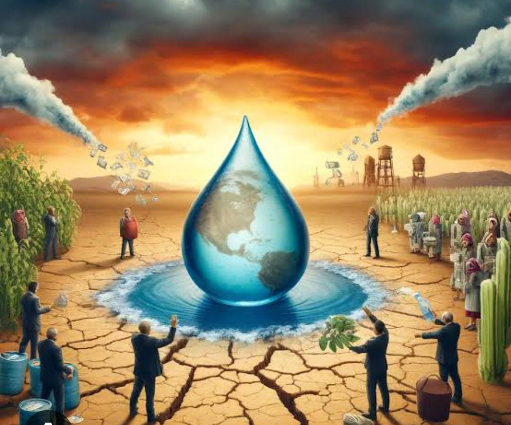

Water Management and Shortage in Civil Engineering
Water is essential for life and infrastructure. In civil engineering, it plays a critical role in construction, sanitation, irrigation, and urban development. But due to urbanization, climate change, and wasteful practices, water shortages are rising, making efficient water management crucial.
🚱 The Growing Issue of Water Shortage
- Rapid urbanization
- Over-extraction of groundwater
- Pollution of rivers and lakes
- Climate change and irregular rainfall
- Inefficient irrigation and outdated infrastructure
According to the UN, by 2025, two-thirds of the global population may face water stress. Many developing areas already struggle with limited clean water access.
🏗️ Role of Civil Engineering in Water Management
- Water Supply Systems: Design and construct dams, reservoirs, treatment plants, and pipelines.
- Rainwater Harvesting: Install rooftop systems and percolation tanks to collect and reuse rainwater.
- Wastewater Management: Build sewage treatment facilities to recycle water for non-potable uses.
- Flood Control: Develop drainage systems, embankments, and retention basins.
- Groundwater Recharge: Implement recharge pits, check dams, and infiltration wells.
- Smart Irrigation: Use drip and sprinkler systems to reduce water use in agriculture.
🌍 Challenges in Water Management
- Leaky and aging infrastructure
- Poor maintenance and inefficient distribution
- Lack of public awareness on water conservation
- Water source contamination from waste
💡 Sustainable Water Solutions
- Smart meters (IoT) for real-time usage tracking
- GIS mapping to detect and prevent leaks
- Water-sensitive urban design with green areas
- Low-water-use construction materials and techniques
✅ Conclusion
Water scarcity threatens human health and development. Civil engineers are essential in creating sustainable water systems through design, innovation, and awareness. Working together, we can ensure safe and sufficient water for generations to come.